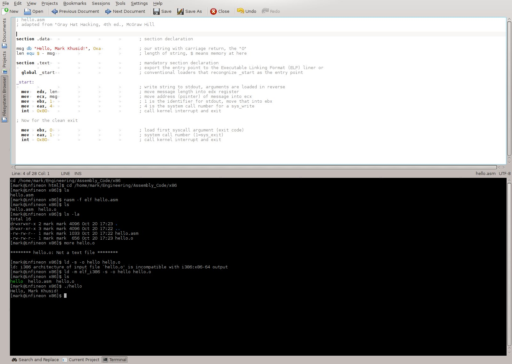
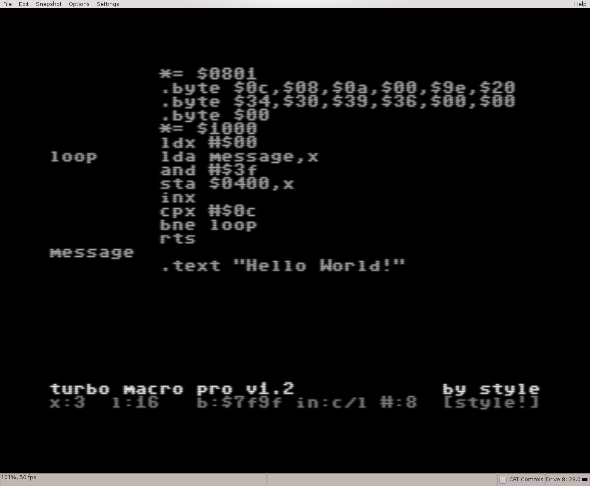
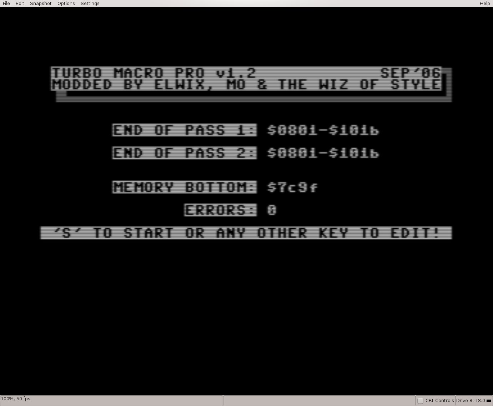
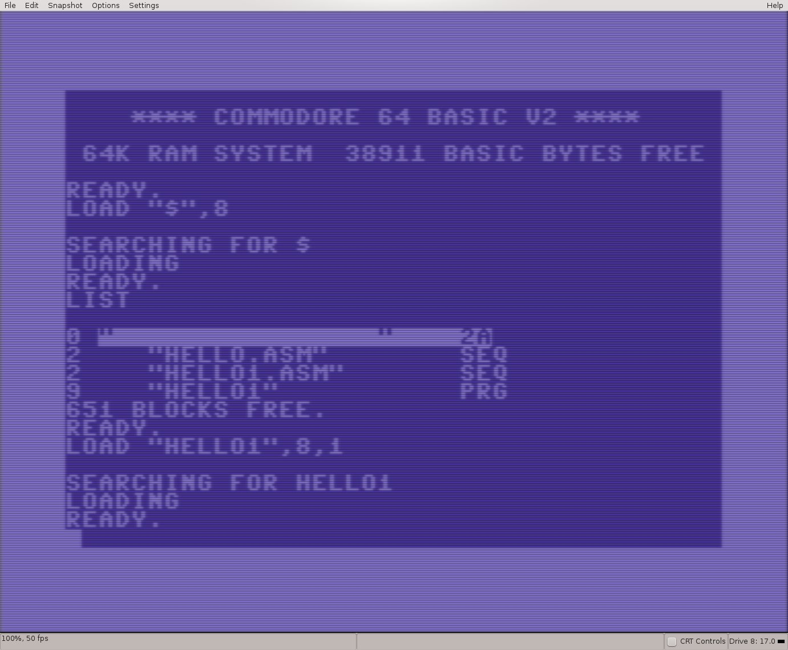
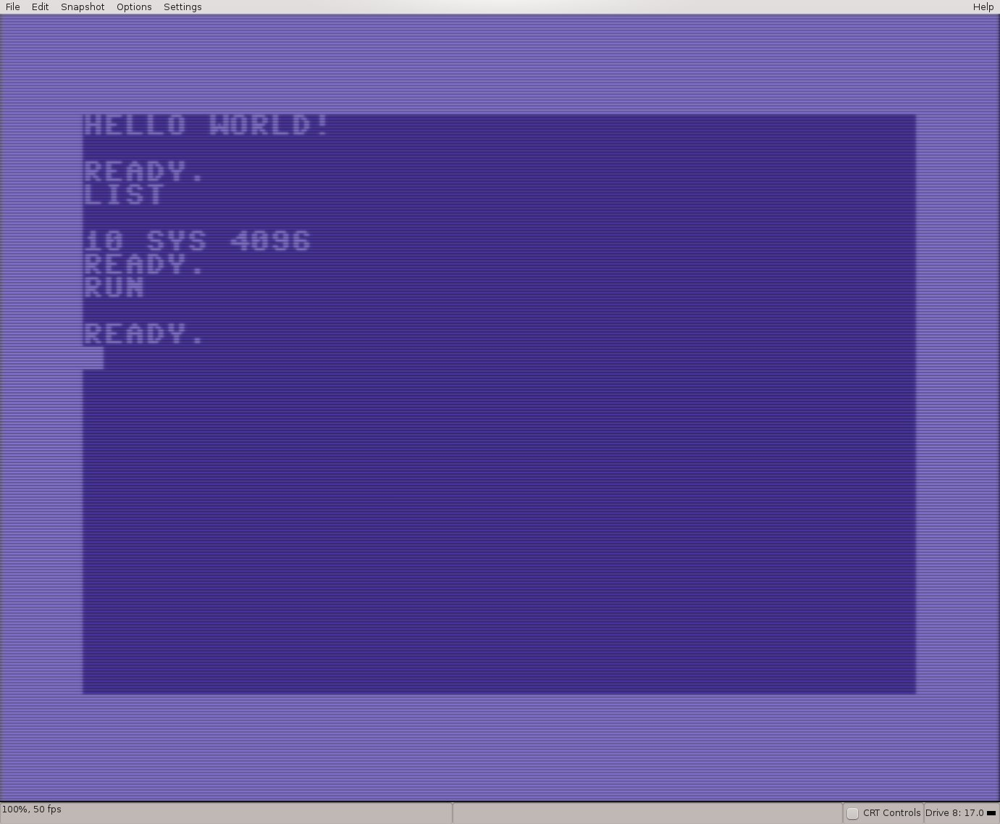

Description
Introduction
The purpose of this section is to demonstrate assembly language programming on a variety of platforms. Attention
is given to the i386 platform, but also as homage I demonstrate an assembly language program on an emulator of my first
computer, the venerable Commodore 64. The Commodore 64 is emulated using VICE.
i386 Assembly Language Programming

Discussion:
Comments are provided on each line of this program. The program is the assembled using NASM as an
ELF (Executable and Linkable Format) file. The object file is then linked using ld and an executable file is produced.
Commodore 64 Assembly Language Programming

This assembly language program is very similar to the i386 version except it is written for the Commodore 64. Essentialy, a loop
is setup that loads each character of the message into screen memory. Execution of the program leads to the message being
displayed on the screen.
Commodore 64 Assembly Language Programming

The program is checked for errors and saved to disk.
Commodore 64 Assembly Language Programming 2

The directory of the virtual disk is loaded by load "$",8 and listed. The program HELLO1.ASM is loaded into memory.
Commodore 64 Assembly Language Programming 2

The program is now in memory and when listing, it shows that it is actually a system call to the memory location of the start of the machine code.
Upon entering RUN, the system call executes the machine code that loads "Hello World!" into screen memory, where it is faithfully displayed in the
upper left hand corner of the screen.